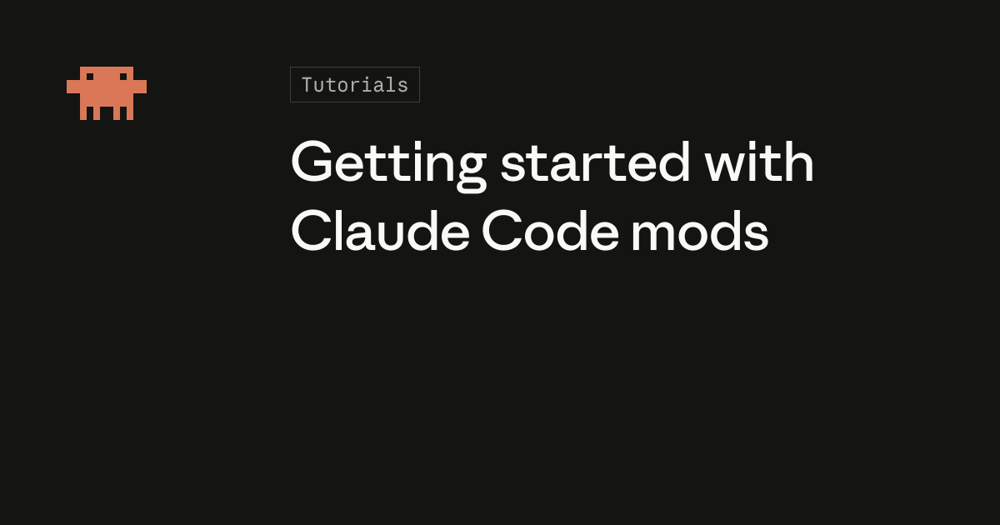
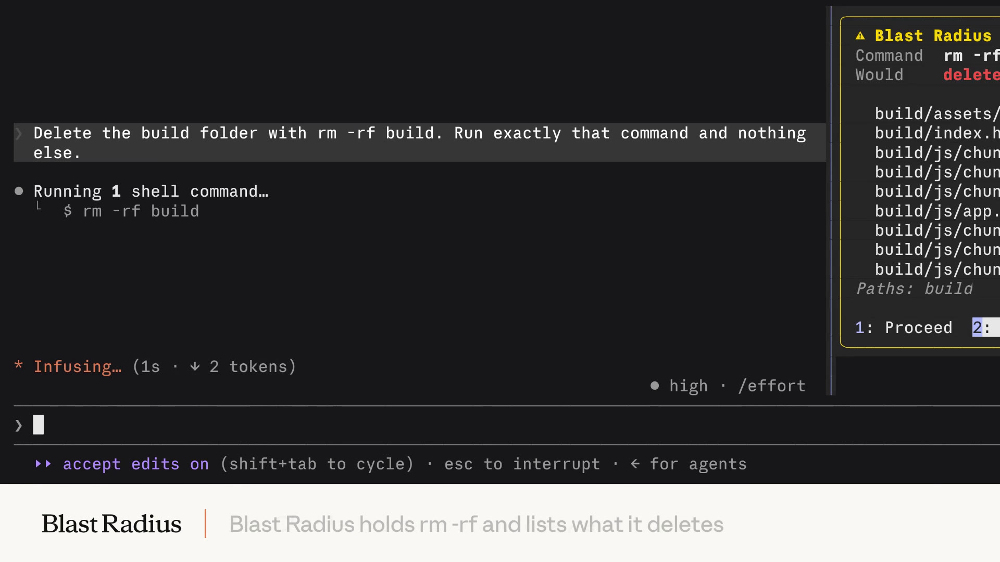
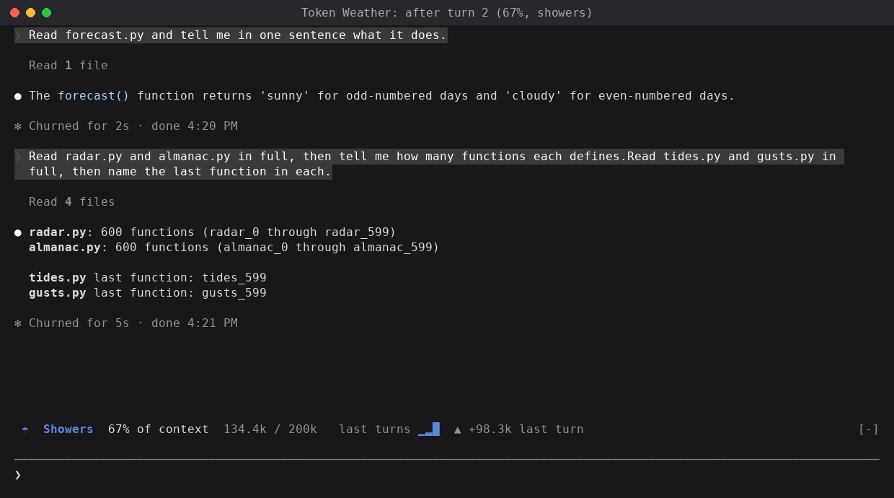
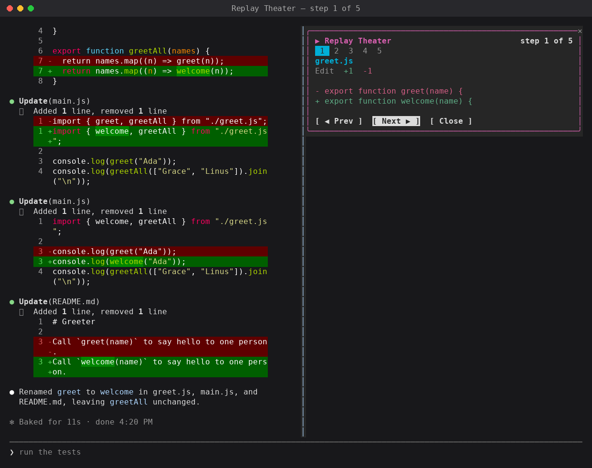
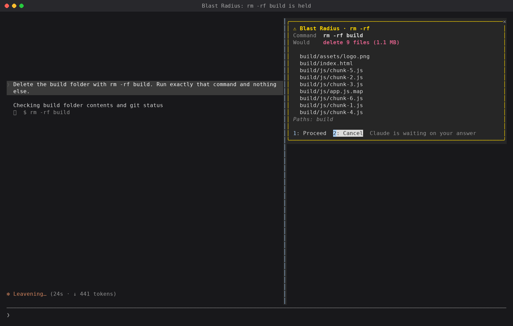
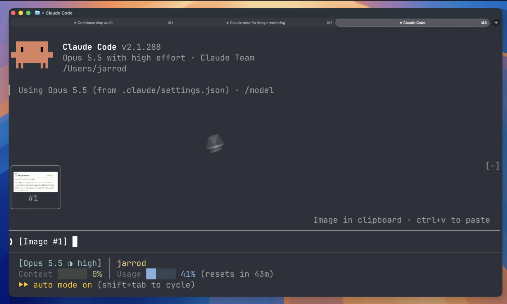
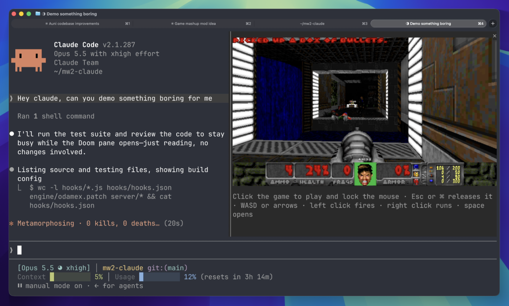

AI GUIDE GUIDE 08
Claude Code Mods,
AI 작업대에 상태판 붙이기
Claude가 얼마나 읽고 무엇을 바꿨는지, 한눈에 볼 수 있을까요?
공식 데모를 살펴보고, 내 작업에 필요한 작은 상태판을 붙여봅니다.

“지금 얼마나 많은 코드를 읽었지?”
“방금 어느 파일을 바꿨지?”
Claude Code에 일을 맡긴 뒤에도 진행 상황과 변경 내용은 사람이 확인해야 합니다. Mods를 쓰면 이렇게 자주 확인하는 정보를 작업 화면에 모아둘 수 있습니다. Claude가 어떤 도구를 쓰는지 보여주거나, 특정 명령을 실행하기 전에 확인창을 띄우는 기능도 만들 수 있습니다.
Anthropic이 2026년 10월 1일 소개한 Mods는 Claude Code의 화면과 동작을 확장하는 기능입니다. JavaScript나 TypeScript로 작성하며, 플러그인에 담아 설치하고 공유합니다. 공식 발표 ↗
이 가이드에서는 공식 데모로 동작을 이해하고, 작은 샘플 하나를 직접 써봅니다. 익숙해지면 Claude에게 우리 업무에 필요한 상태판도 만들어 달라고 요청해봅시다. 다른 개발자들이 만든 Mod는 실습을 마친 뒤 살펴볼 수 있도록 글 끝에 모았습니다. Claude Code를 처음 접한다면 Claude Code 입문부터 읽어보세요.
첫 목표는 AI가 무엇을 하고 있는지, 사람이 덜 힘들게 확인하는 것입니다.
자주 확인하는 정보를
작업 화면에 모으기
입력창 위에는 현재 상태가, 옆 패널에는 변경 내역이 보인다고 생각해보세요. 진행 상황을 확인하려고 여러 화면을 오가는 수고가 줄어듭니다. 중요한 명령을 실행하기 전에는 확인창을 띄워 사람이 한 번 더 살펴보게 할 수도 있습니다.
Claude Code는 도구를 실행하거나 응답을 마칠 때 ‘이벤트’라는 신호를 보냅니다. Mod는 이 신호를 받아 정해진 일을 처리합니다. 아래 그림은 그 흐름을 간단히 나타낸 것입니다.
- 이벤트가 발생도구 실행·응답 완료·화면 표시 시점에 신호를 보냄
- Mod가 처리필요한 일을 처리하고, 다음 단계로 넘길 때
next를 사용 - 다음 단계로 연결다른 Mod나 Claude Code가 이어서 처리하고, 결과는 역순으로 돌아옴
처음에는 진행 상황을 읽어 화면에 보여주는 ‘관찰’ 기능부터 만들어봅니다.
여러 Mod가 같은 이벤트를 처리할 때는 불러온 순서대로 동작합니다. 웹 개발에서 요청을 차례로 처리하는 미들웨어와 비슷한 구조입니다. 변경 내역을 보여주는 기본 기능 /diff도 Mod로 제공됩니다. 동작 구조와 내장 기능 ↗
Skills, MCP, Hooks와는 무엇이 다를까
| 기능 | 주로 맡는 일 | 예시 |
|---|---|---|
CLAUDE.md | 기본 맥락과 규칙 | 주문 금액 변경 시 정산 영향 확인 |
| Skills | 반복 업무의 지식·절차 | 주문 취소 영향 분석 절차 |
| MCP | 외부 도구·데이터 연결 | 승인된 이슈 시스템 조회 |
| 기존 Hooks | 이벤트에 스크립트 등 연결 | 파일 수정 후 검사 실행 |
| Mods | 내부 동작·화면 확장 | 상태판, 변경 패널, 실행 확인창 |
| Plugins | 확장을 묶어 설치·공유 | 팀 공통 도구 묶음 |
Plugin은 여러 확장 기능을 묶어 설치하고 공유하는 단위이고, Mod는 그 안에 담는 기능 중 하나입니다. 반복해서 알려줄 업무 절차라면 Skill을, 파일 수정 뒤처럼 정해진 시점에 검사를 실행하려면 Hook을 먼저 살펴보세요. 작업 화면이나 Claude Code의 처리 방식을 바꾸고 싶을 때 Mod를 고려하면 됩니다.
세 가지 샘플로 보는
상태 표시, 편집 검토, 실행 전 확인
Anthropic 개발자 관계팀이 공개한 세 가지 샘플부터 살펴봅시다. 모두 Mods를 배우고 실험하기 위한 예제여서 지속적인 지원이나 유지보수가 보장되지는 않습니다. 각 샘플로 무엇을 할 수 있는지, 사용할 때 무엇을 알아두면 좋은지 함께 보겠습니다.

공식 데모 재생1분 20초 · 새 탭에서 열기 ↗Token Weather 관찰
Token Weather는 입력창 위에 컨텍스트 사용률을 날씨로 표시합니다. 컨텍스트는 모델이 답변할 때 참고하는 대화와 코드 등의 정보입니다. 이 정보를 담을 수 있는 공간이 얼마나 찼는지 보여주는 셈입니다.
대화와 코드의 양을 세는 단위를 ‘토큰’이라고 합니다. 이 샘플은 토큰 사용량과 최근 변화도 함께 보여줍니다. 사용자가 요청한 뒤 Claude가 작업하고 답변을 마치기까지의 한 차례를 ‘턴’이라고 부릅니다.

현재 대화의 사용량 정보를 읽어 표시하므로, 이를 위해 모델에 별도 요청을 보내지는 않습니다. 숫자는 사용자와 나누는 대화에서 한 차례 작업이 끝난 뒤 바뀝니다. 예를 들어 주문·결제 코드를 읽을 때마다 참고하는 정보가 얼마나 늘었는지 살펴볼 수 있습니다.
이 숫자는 컨텍스트 공간을 얼마나 사용했는지 보여줍니다. 주간 사용 한도와는 다른 지표입니다. 모델의 전체 컨텍스트 크기를 기준으로 계산하므로 자동 압축 안내에 나오는 비율과도 다를 수 있습니다. 첫 응답 전에는 0%로 표시될 수 있습니다.
Replay Theater 검토
Replay Theater는 Claude가 파일을 편집하려고 도구를 사용한 내역을 기록합니다. /replay를 입력하면 어떤 파일을 어떻게 바꾸려 했는지 한 단계씩 되짚어볼 수 있습니다.

거부되거나 실패한 편집 시도도 기록에 나타날 수 있습니다. Replay에 표시됐다고 해서 파일이 실제로 바뀐 것은 아닐 수 있습니다. Replay로 작업 흐름을 살펴본 뒤, 실제 파일과 Git diff로 변경 내용을 확인하고 테스트 결과까지 검토하세요. 기록은 현재 세션의 메모리에만 남으므로 세션을 다시 시작하거나 플러그인을 다시 불러오면 사라집니다.
Blast Radius 실행 전 확인
Blast Radius는 일부 삭제·강제 푸시 명령을 감지하면 실행을 잠시 멈추고, 어떤 파일이나 변경 내역에 영향을 줄지 보여줍니다. 내용을 확인한 뒤 Proceed(계속 실행) 또는 Cancel(취소)을 선택합니다.

다만 Bash 명령에서 특정 패턴을 찾는 방식이라 스크립트 내부의 명령이나 다른 도구의 파일 편집까지 막지는 못합니다. 실행 권한을 제한하거나 작업을 격리하는 기능을 대신할 수는 없습니다. Bash·Git·find·du 같은 도구도 필요합니다. 첫 실습은 준비할 것이 적은 Token Weather 하나로 시작하겠습니다.
첫 실습,
Token Weather 한 줄 띄우기
이제 Token Weather를 직접 띄워봅시다. Claude Code를 실행할 수 있는 터미널과 Git을 준비하고, 고객 정보나 운영 설정이 없는 연습 폴더에서 진행하세요. 샘플을 사용하려면 Claude Code 2.1.287 이상이 필요합니다. 이는 샘플이 요구하는 최소 버전입니다. 샘플 설치 안내 ↗
1. 버전 확인
터미널 · PowerShell, Bash 등claude --version
git --version네이티브 설치라면 claude update로 업데이트할 수 있습니다. Homebrew·WinGet 설치는 해당 패키지 관리자의 업데이트 명령을 사용하세요. 조직에서 배포 버전을 관리한다면 그 절차를 따릅니다. 공식 업데이트 안내 ↗
2. 샘플 가져오기
터미널 · 연습 폴더에서 실행git clone https://github.com/anthropics/claude-code-playground.git
cd claude-code-playground/claude-code/mods이제 claude-code/mods 폴더에 들어왔습니다. 다음 명령들은 이 위치에서 실행하세요. 저장소의 최상위 폴더에서 실행하면 샘플 경로를 찾지 못합니다.
3. 내용을 살펴보고 검사
token-weather/README.md와 샘플의 hooks/ 폴더에 있는 코드를 먼저 읽어보세요. 사용량을 표시하는 기능 외에 외부 통신이나 다른 프로그램을 실행하는 코드가 있는지 살펴본 뒤, 아래 검사 명령을 실행합니다.
claude plugin validate ./token-weathervalidate는 플러그인의 정보가 담긴 설정 파일과 구성이 올바른지 검사합니다. 통과하더라도 코드가 안전한지는 별도로 살펴봐야 합니다. 검사 범위 ↗
4. 이번 세션에서 사용
터미널 · 같은 폴더에서 실행claude --plugin-dir ./token-weather열린 Claude Code의 대화 입력창에는 다음을 넣어보세요.
Claude Code 대화 입력창 · 자연어 요청token-weather/README.md를 읽고,
이 Mod가 표시하는 정보와 주의점을 한국어로 설명해줘.
파일을 수정하거나 추가 명령을 실행하지는 마.응답이 끝난 뒤 입력창 위의 표시를 확인하면 첫 실습은 끝입니다. 일부러 큰 파일을 읽어 사용률을 높일 필요는 없습니다.
--plugin-dir는 영구 설치 전에 시험하는 방법입니다. 다른 플러그인을 모두 끄거나 파일 접근을 제한하는 옵션은 아닙니다. 공식 명령 참조 ↗
계속 쓸 때는
설치 범위부터 정하기
앞선 Claude Code 세션을 종료하고, claude-code/mods 폴더의 터미널에서 실행합니다. 여기서는 연습 프로젝트에서 나만 쓰는 local 범위를 선택합니다.
claude plugin marketplace add ./
claude plugin install token-weather@claude-code-playground-mods --scope local첫 줄은 현재 폴더를 플러그인 공급처인 ‘마켓플레이스’로 등록하는 명령입니다. 두 번째 줄은 그 공급처에서 Token Weather를 설치합니다. claude-code-playground-mods는 샘플 저장소에서 정한 마켓플레이스 이름입니다. 나중에 이 폴더를 옮기거나 지우면 등록된 경로도 다시 확인해야 합니다.
| 범위 | 적용 대상 | 이 가이드의 선택 |
|---|---|---|
local | 현재 프로젝트에서 나만 | 첫 연습에 사용 |
user | 이 컴퓨터의 내 여러 프로젝트 | 계속 사용할 때 검토 |
project | 팀과 공유할 프로젝트 설정 | 팀 합의 후 적용 |
설치 범위는 누가 어느 프로젝트에서 플러그인을 사용할지 정하는 설정입니다. 플러그인이 읽거나 쓸 수 있는 파일을 제한하지는 않습니다. project 설정을 공유하더라도 각 멤버가 플러그인을 내려받는 과정은 따로 필요합니다. 설치와 범위 설명 ↗
Claude Code가 이미 열려 있다면 대화 입력창에 /reload-plugins를 입력해 플러그인을 다시 불러옵니다. 이어서 /plugin에서 정상적으로 불러왔는지 확인하세요. 반영되지 않으면 세션을 다시 시작합니다.
업데이트·비활성화·제거 명령 펼치기
아래는 local로 설치한 경우입니다. 같은 프로젝트 폴더의 터미널에서 필요한 명령 하나를 실행합니다.
# 업데이트
claude plugin update token-weather@claude-code-playground-mods --scope local
# 잠시 끄기
claude plugin disable token-weather@claude-code-playground-mods --scope local
# 제거
claude plugin uninstall token-weather@claude-code-playground-mods --scope local다른 범위에 설치했다면 --scope 값을 해당 범위로 바꾸세요. 이 실습처럼 컴퓨터에 내려받은 폴더를 공급처로 쓸 때는 그 폴더의 코드를 먼저 갱신한 뒤 플러그인을 업데이트합니다. 변경 후에는 열린 세션에서 플러그인을 다시 불러오거나 세션을 다시 시작하세요. 명령과 옵션 ↗
우리 업무용 상태판,
원하는 동작을 먼저 설명하기
샘플을 사용해봤으니, 이번에는 우리에게 필요한 상태판을 만들어봅시다. 이름은 hello-workboard로 정하겠습니다. 몇 차례 작업을 마쳤는지, 마지막으로 어떤 도구를 썼는지, 컨텍스트를 얼마나 사용했는지를 한 줄로 보여주는 것이 목표입니다. 별도 연습 폴더에서 Claude Code를 열고 아래 내용을 요청하세요.
Claude Code Mod인 hello-workboard를 만들어줘.
목적
AI가 작업하는 동안 사람이 상태를 확인하기 쉽게 한다.
화면
프롬프트 입력창 위에 한국어 한 줄 상태판을 표시한다.
- 완료된 메인 턴 수
- 마지막으로 사용한 도구 이름
- 실제 세션 정보에서 얻은 컨텍스트 사용률
- 값을 얻지 못하면 추측하지 말고 '확인 불가' 표시
완성된 Mod가 실행될 때 지킬 제한
- 도구 호출의 허용·거절 여부나 내용을 바꾸지 않는다.
- 외부 통신, 별도 모델 호출, 외부 프로그램 실행을 하지 않는다.
- 프로젝트 파일을 수정하지 않는다.
- 프롬프트 본문, 파일 내용, 도구 인자를 별도로 저장하지 않는다.
구현과 검증
- 현재 설치된 버전의 Mods 안내와 API 타입을 확인한다.
- 결과물은 현재 폴더 아래 ./hello-workboard에 저장한다.
- 상태를 $.state에 두면 타입 계약도 선언한다.
- 사용량 정보가 없을 때와 화면이 좁을 때도 처리한다.
- 관찰 후 원래 이벤트가 정상적으로 이어지는지 확인한다.
- 기대 동작을 확인할 테스트를 작성한다.
- claude plugin validate와 claude plugin test를 실행한다.
- 실행하지 못한 검사는 통과했다고 쓰지 않는다.
- 설치, 실행, 비활성화 방법을 README에 기록한다.‘프로젝트 파일을 수정하지 않는다’는 조건은 완성된 Mod를 사용할 때 적용됩니다. Mod를 만드는 동안에는 코드와 테스트 파일을 작성해야 합니다. 또 요청에 조건을 적는 것만으로 지켜지는 것은 아니므로, 만들어진 코드가 그 조건을 따르는지도 확인하세요.
만든 뒤 확인할 세 가지
- 정보가 없을 때 숫자를 추측하지 않고 ‘확인 불가’를 표시하는가.
- 다시 시작하거나 화면이 좁을 때 상태판이 정상적으로 동작하고 핵심 정보를 읽을 수 있는가.
- Claude가 작업할 때 상태판 때문에 도구 실행이 빠지거나 내용이 바뀌지는 않는가.
claude plugin validate ./hello-workboard
claude plugin test ./hello-workboard
claude --plugin-dir ./hello-workboardclaude plugin test는 작성한 Mod 테스트를 실행합니다. 결과를 볼 때는 ‘통과’라는 표시뿐 아니라 테스트가 몇 개 실행됐고, 어떤 동작을 확인했는지도 살펴보세요. 공식 튜토리얼에서는 사용량이 달라지면 화면의 숫자도 바뀌는지 검사합니다. 공식 테스트 예제 ↗
이벤트, 상태, 화면을 나눠 보기
여기부터는 생성된 코드를 읽을 때 도움이 되는 내용입니다. 우선 ‘언제 정보를 읽는가’, ‘그 정보를 어디에 보관하는가’, ‘화면에는 어떻게 보여주는가’를 나눠 보세요. 마지막으로 각 동작을 확인하는 테스트가 있는지 살펴보면 됩니다.
hello-workboard/
├── .claude-plugin/
│ └── plugin.json 이름·메타데이터·타입 계약 경로
├── hooks/
│ ├── hooks.json 불러올 모듈 지정
│ └── index.ts 이벤트 처리와 화면 구성
├── types/
│ └── index.d.ts $.state 사용 시 상태 타입 계약
└── tests/
└── workboard.test.ts 동작 검증위는 구조를 이해하기 위한 예시입니다. 시작 함수인 register(on, options)에서 이벤트를 처리할 함수를 등록합니다. 각 함수는 Claude Code의 기능을 사용하는 $, 현재 이벤트를 담은 e, 다음 단계로 처리를 넘기는 next를 받습니다.
- 이벤트를 받기메인 턴 완료
turn.complete - 정보를 읽고 보관
$.session.usage()$.state - 화면에 그리기
ui.renderAbovePrompt
공식 튜토리얼은 화면을 그릴 때 저장된 상태를 읽도록 만듭니다. 그러면 이후 상태가 바뀔 때 화면도 함께 갱신됩니다.
공식 튜토리얼은 Claude Code가 상태를 보관하는 $.state를 사용합니다. 이때 어떤 이름과 형식의 값을 저장할지 선언하는 ‘타입 계약’도 작성합니다. 반면 이 글에서 설치하는 공개 Token Weather 샘플은 다시 불러오면 기록이 초기화된다고 안내합니다. 같은 이름의 예제라도 저장 방식은 다를 수 있으니, 사용하는 코드의 설명을 확인하세요.
‘테스트 통과’ 뒤에
코드가 바뀌었다면?
커머스 개발에서도 반복해서 확인하는 정보를 상태판으로 옮겨볼 수 있습니다. 예를 들어 ‘마지막 테스트 이후 코드가 바뀌었는가’를 보여주면 어떨까요? 아래는 그 아이디어를 체험해보는 헬로우 휴먼의 교육용 화면입니다.
주문 취소 작업 상태판
‘테스트 통과’를 누른 뒤 ‘코드 수정’을 눌러보세요. 이전 코드가 테스트를 통과했더라도, 수정한 코드는 다시 검사해야 한다는 것을 보여줍니다.
- 현재 코드
- v1
- 최근 검사 대상
- 아직 없음
- 최근 검사 결과
- 실행 전
- 검사 후 코드 변경
- 비교할 검사 없음
버튼을 누르면 화면의 예시 상태만 바뀝니다. 실제 Claude Code에 연결하거나 파일을 수정하고 테스트를 실행하는 기능은 없습니다.
테스트를 통과한 뒤 코드가 바뀌었다면 새 코드도 다시 검사해야 합니다. 그래서 상태판에는 언제 검사했는지, 어떤 코드를 검사했는지, 그 뒤에 수정한 내용이 있는지를 함께 보여주는 것이 좋습니다. 물론 현재 코드가 테스트를 통과해도, 테스트에서 다루지 않은 동작까지 확인한 것은 아닙니다.
| 다음 과제 | 보여줄 정보 | 오해를 막는 조건 |
|---|---|---|
| 변경 영향 패널 | 주문·결제·쿠폰·정산별 변경 파일 | 폴더 분류와 실제 업무 영향 분석을 구분 |
| 테스트 결과판 | JUnit·프론트엔드 검사 결과 | 실행 시각과 검사한 코드 상태 표시 |
| DB 호환성 점검판 | SQL 변경과 확인 항목 | ‘검사했다’를 ‘변환에 성공했다’로 표시하지 않기 |
| 업무 규칙 검토 패널 | 결제 취소·쿠폰 복원·배송비·정산·중복 요청 | 실제 근거가 연결되기 전에는 ‘확인 전’ 유지 |
처음에는 확인할 항목을 보여주는 것부터 시작하세요. 이후 실제 테스트 결과나 검토 기록을 연결하면 됩니다. AI의 답변만 보고 확인 완료를 표시하기보다, 무엇을 근거로 판단했는지 함께 보여주는 것이 좋습니다.
Mod도 내 컴퓨터에서
실행되는 프로그램입니다
Mods는 내 컴퓨터에서 실행되는 코드입니다. Anthropic은 Claude Code와 같은 수준으로 컴퓨터에 접근하며, 별도의 격리 공간인 ‘샌드박스’에서 실행되지 않는다고 명시합니다. 작은 표시 기능이라도 코드를 확인한 뒤 사용하세요. 업데이트할 때도 외부로 정보를 보내거나 다른 프로그램을 실행하는 기능이 추가됐는지 살펴봅니다. 공식 접근 권한 안내 ↗
Blast Radius의 확인창은 실행 여부를 판단하는 데 도움을 주는 보조 장치입니다. 운영 계정의 권한, DB 접근 제어, 조직의 관리 설정도 함께 유지해야 합니다. 특히 DB 구조를 바꾸는 마이그레이션의 영향을 확인할 때는, 실행을 승인하기 전에도 프로젝트의 상태를 조회하는 명령이 실행될 수 있습니다. 실험은 문제가 생겨도 지우고 다시 만들 수 있는 연습 환경에서 하세요. 샘플의 제한 사항 ↗
화면에서 값을 가렸더라도 다른 기능이 그 데이터를 읽는 것까지 막아주지는 않습니다. 첫 실습에는 고객 정보·결제 정보·운영 서비스의 비밀번호나 인증키를 사용하지 마세요. AI 사용이 금지된 프로젝트에서는 Mods도 사용하지 않습니다.
팀·조직에서 함께 쓸 때
조직에서는 플러그인을 가져올 수 있는 공급처를 허용하거나 차단할 수 있습니다. Team·Enterprise 및 관리 설정이 적용된 컴퓨터에는 sec-default가 먼저 불러와집니다. 사용자가 추가한 Mod가 권한 거부 규칙 등을 덮어쓰지 못하도록 제한하는 기능입니다. 관리자가 먼저 실행할 Mod의 구성을 바꾸더라도 이 보호를 유지하려면 sec-default를 포함해야 합니다. 적용 조건 확인 ↗
표시가 이상할 때,
하나씩 확인하기
| 증상 | 먼저 확인할 것 |
|---|---|
| 아무것도 안 보인다 | 버전·현재 폴더·터미널 환경을 확인하고, /plugin에서 플러그인을 정상적으로 불러왔는지 살펴보기 |
| 처음 사용률이 0%다 | 첫 응답 전에는 0%일 수 있으므로, 한 번 요청하고 응답이 끝난 뒤 다시 보기 |
| 작업 중 숫자가 안 바뀐다 | Token Weather는 사용자 요청에 대한 한 차례 작업이 끝난 뒤 숫자가 바뀜 |
| 다른 Mod를 켜니 표시가 사라진다 | 입력창 위의 AbovePrompt 영역을 함께 사용해 충돌할 수 있으므로, 하나씩 끄고 비교하기 |
| Replay와 파일 상태가 다르다 | 실패·거부된 편집 시도인지 확인. 실제 파일과 Git diff 대조 |
| 설정 변경이 반영되지 않는다 | /reload-plugins 실행 또는 세션 재시작 |
표시 시점과 영역 충돌은 Token Weather README, 편집 기록의 제약은 Replay Theater README에서 확인했습니다.
Token Weather 하나를 써보고,
반복해서 확인하는 정보 하나를 상태판으로 옮겨보세요.
며칠 사용한 뒤에는 진행 상황을 확인하는 데 걸리는 시간이 줄었는지, 변경 내용을 놓치는 일이 줄었는지 돌아보세요. LLM 선택 가이드에서 이야기했듯, 우리 일을 실제로 얼마나 편하게 해주는지가 선택의 기준입니다.
더 살펴보고 싶다면,
커뮤니티 Mods 세 가지
기본 실습을 마쳤다면, 다른 개발자들이 만든 Mod에서도 아이디어를 찾아보세요. 이미지 미리보기 도구부터 기다리는 동안 즐기는 게임까지, 최근 관심을 모은 세 가지 사례를 골랐습니다. 모두 코드와 사용 안내가 공개돼 있습니다. 어떤 상황에 유용한지 소개하고, 테스트와 수정 기록도 함께 살펴보겠습니다.
2026년 10월 10일 기준입니다. GitHub 별 수는 관심도를 보여주지만, 실제 사용자 수나 안정성을 뜻하지는 않습니다. 공개 테스트 코드의 내용을 살펴봤으며, 직접 실행하거나 장기간 사용해 검증한 것은 아닙니다.
Claude Image View 붙여넣은 이미지 확인
스크린샷을 여러 장 붙여넣었는데 [Image #1], [Image #2]만 보여 어느 이미지인지 헷갈린 적이 있나요? 이 Mod는 입력창 위에 이미지 미리보기와 번호를 함께 표시합니다. 화면 오류를 설명하거나 디자인 시안을 비교할 때, 보내려는 이미지가 맞는지 바로 확인할 수 있습니다.


- 관심도와 개발 기록 GitHub 별 172개를 받았고, 이미지 표시와 배치를 검사하는 테스트 5개가 공개돼 있습니다. 이미지 비율이 유지되는지, 좁은 화면에 맞게 배치되는지, 메시지를 보낸 뒤 미리보기가 사라지는지 등을 검사합니다. 10월 3일에는 다른 개발자가 보완한 사용 안내도 반영됐습니다.
- 사용 환경 Claude Code 2.1.287 이상과 macOS 또는 Linux가 필요합니다. 터미널은 Ghostty·kitty처럼 이미지를 표시할 수 있어야 합니다. 데스크톱 앱에는 자체 미리보기가 있어 이 Mod가 별도 화면을 표시하지 않습니다.
- 알아둘 점 Windows와 일부 터미널 조합에서 이미지가 보이지 않는 문제가 보고돼 있습니다. 제작자 설명에 따르면 외부 통신이나 파일 쓰기는 하지 않으며, 입력창 내용과 임시 저장된 이미지를 읽습니다.
제작자 설명·화면·설치 안내 ↗ · 확인한 테스트 코드 · 알려진 문제
Terminal Browser 웹 화면을 나란히 보기
Claude Code의 대화 옆에서 실제 웹페이지를 열어볼 수 있는 브라우저입니다. /browser를 입력하면 옆 패널에 브라우저가 열립니다. 참고 문서나 개발 중인 웹 화면을 대화와 나란히 보고 싶을 때 살펴볼 만합니다.
- 관심도와 개발 기록 GitHub 별 3,764개를 받았고, 코드는 10월 7일에도 수정됐습니다. 제작자 데모와 사용 문서, 변경 기록을 확인했습니다. 별 수는 브라우저 전체 프로젝트의 수치로, Claude Code용 Mod에만 달린 별은 아닙니다.
- 사용 환경 브라우저 프로그램을 별도로 설치해야 하며, 이미지를 표시할 수 있는 호환 터미널이 필요합니다. Windows에서는 리눅스를 실행하는 WSL도 필요합니다.
- 알아둘 점 Claude Code용 플러그인은 아직 실험 단계입니다. 사용하는 터미널에 따라 동작이 다를 수 있고, 마우스 위치가 어긋나거나 패널 크기 조절에 제약이 생길 수 있습니다. 브라우저가 사용 정보를 수집하는 설정도 살펴보세요.
프로젝트와 데모 ↗ · 확인한 플러그인 안내·제약 · 사용 정보 수집 설정
Intermission 화제가 된 게임 Mod
Claude가 작업하는 동안 다른 개발자들과 옆 패널에서 Doom을 즐기는 Mod입니다. 함께 게임하는 사람들도 각자의 Claude가 작업을 마치길 기다리고 있습니다. Claude가 답변을 마치거나 실행 권한을 물으면 다시 대화 화면으로 돌아옵니다. 이 발상이 화제가 되면서 10월 9일 WeAreDevelopers에도 소개됐습니다.


- 관심도와 개발 기록 GitHub 별 108개를 받았고, 테스트 12개가 공개돼 있습니다. 작업 시작 2초 뒤에 게임이 열리는지, 작업이 끝나거나 권한 확인이 필요할 때 대화로 돌아오는지 등을 검사합니다. 실제 게임을 실행하는 대신 동작을 흉내 내는 테스트이므로, 여러 사람이 함께 플레이할 때의 품질까지 확인한 것은 아닙니다.
- 사용 환경 Claude Code 2.1.287 이상, macOS 15 이상, Ghostty·kitty가 필요합니다. 처음 사용할 때 게임을 내려받고 외부 게임 서버에 연결합니다.
- 살펴볼 이유 작업이 시작되고 끝나는 시점, 사람의 확인이 필요한 순간에 맞춰 화면을 바꾸는 아이디어가 흥미롭습니다. 업무용 Mod를 구상할 때도 참고할 수 있습니다. 다만 이 게임이 업무 생산성을 높여준다는 근거를 확인한 것은 아닙니다.
제작자 설명·화면·설치 안내 ↗ · 확인한 테스트 코드 · 10월 9일 소개 기사
기본 실습에 익숙해진 뒤에는 평소 불편했던 일을 기준으로 골라보세요. 붙여넣은 이미지가 헷갈렸다면 Claude Image View를, 웹 화면을 대화 옆에 두고 싶었다면 Terminal Browser를 살펴보세요. 아직 초기 단계인 만큼, 내 환경에서 필요한 기능이 잘 동작하는지 하나씩 확인해봅시다.
참고 자료와 확인 범위
- Getting started with Claude Code mods · 출발점, 공식 표지·영상, 상태 관리·검증 예제
- Customize Claude Code with mods · 2026. 10. 01 발표, 접근 권한과 조직 제어
- Claude Code Playground 공식 샘플 · 확인 커밋
569c528, 설치 조건·각 샘플의 한계 - 플러그인 설치와 관리 · 플러그인 명령 참조 · 업데이트 안내
- Mods 문서 · 구현 시 설치 버전의 API·타입과 함께 확인
- 커뮤니티 사례의 제작자 저장소 · Claude Image View · Terminal Browser · Intermission
이 글은 2026년 10월 10일 확인한 공식 문서와 공개 코드를 바탕으로 작성했습니다. GitHub 별 수는 그날 조회한 수치입니다. 공개 테스트가 어떤 동작을 검사하는지는 읽어봤지만, 테스트를 직접 실행해 통과 여부를 확인하지는 않았습니다. 설치 실습 전체도 별도 Claude Code 세션에서 실행 검증한 것은 아닙니다.
공식 샘플의 화면과 영상은 Anthropic, 커뮤니티 사례의 화면과 영상은 각 제작자가 공개한 자료입니다. 본문의 흐름도, 제작 요청문, 체험용 상태판은 헬로우 휴먼이 학습을 돕기 위해 구성했습니다.
함께 보관한 라이선스 · Anthropic 샘플 (Apache-2.0) · Claude Image View (MIT) · Intermission (MIT)